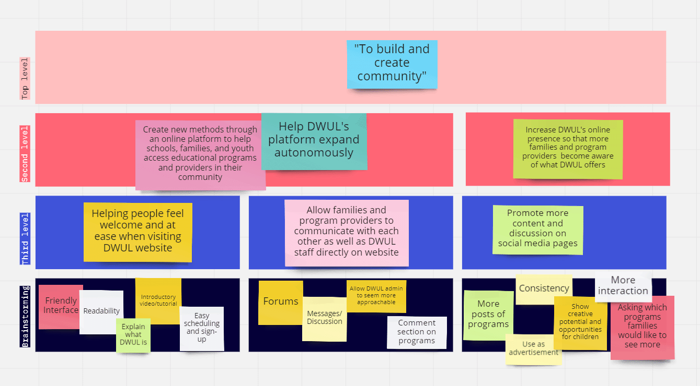
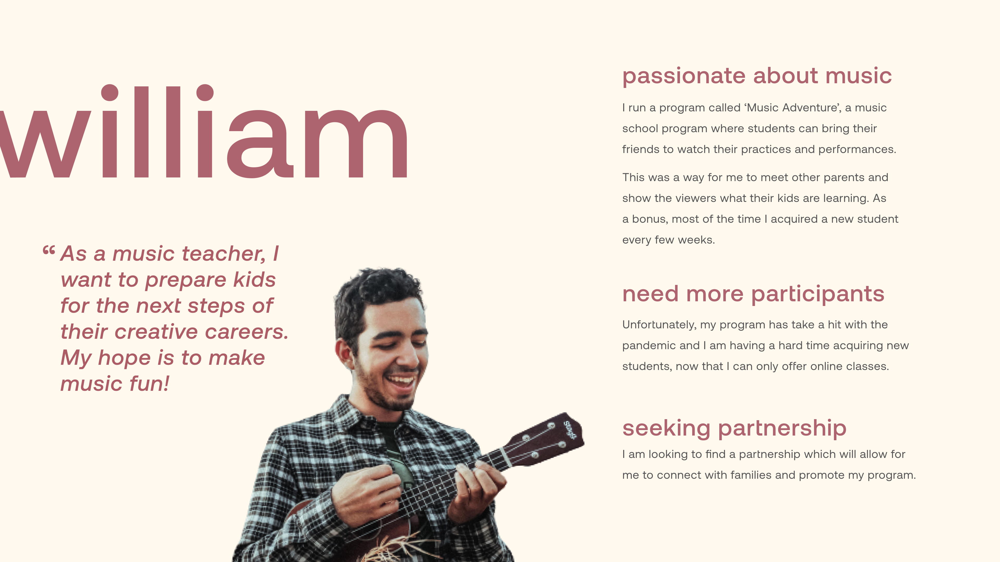
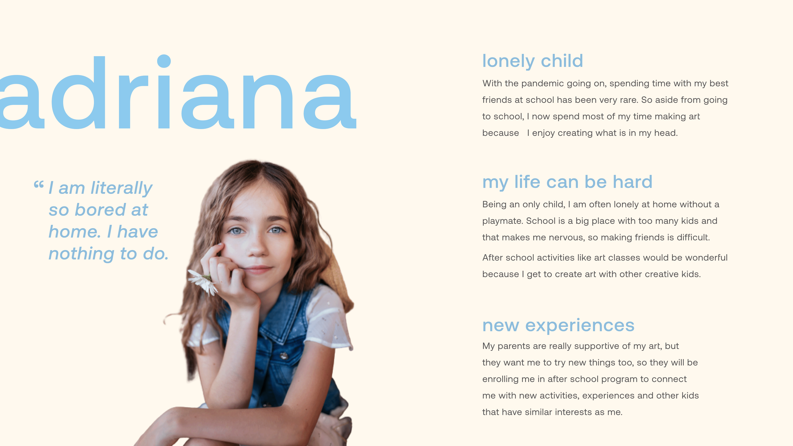
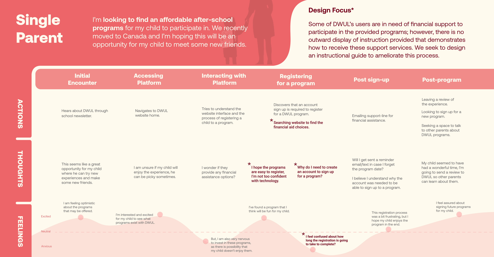
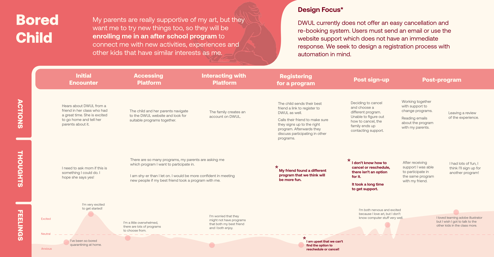
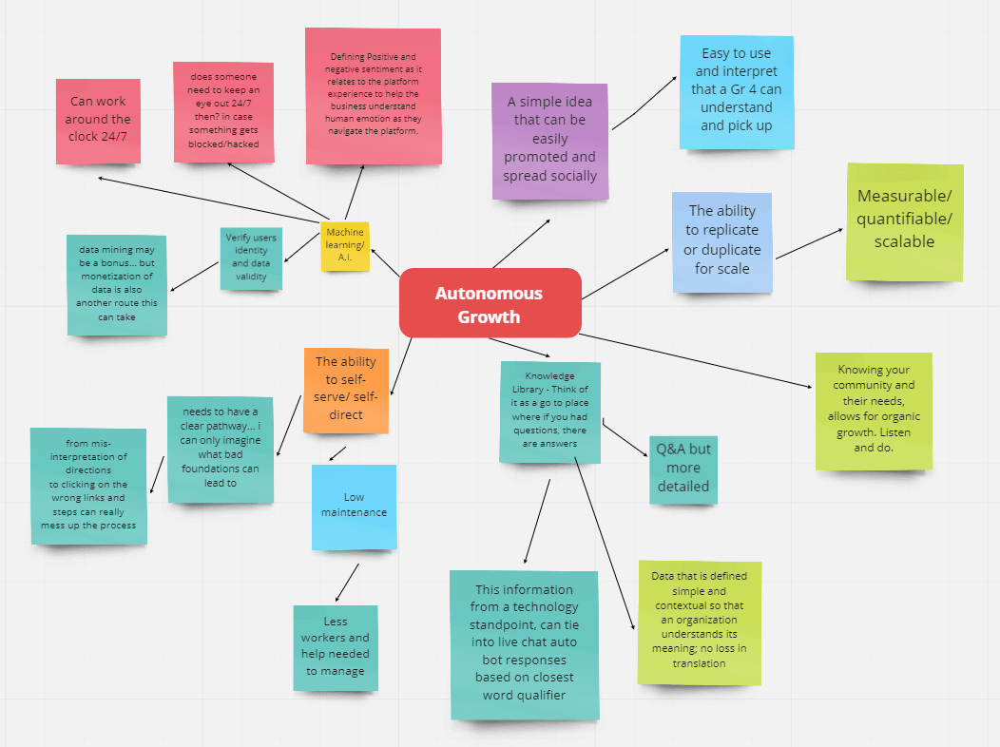
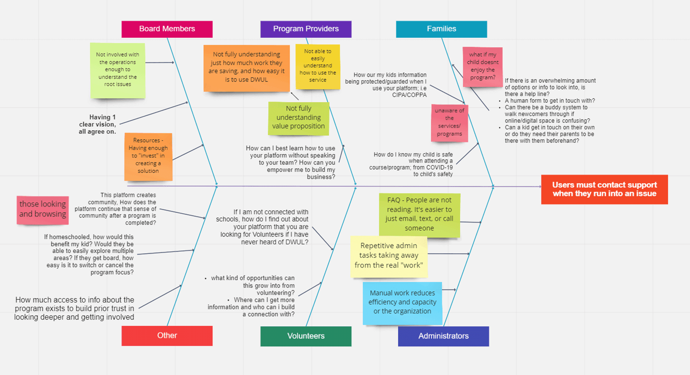
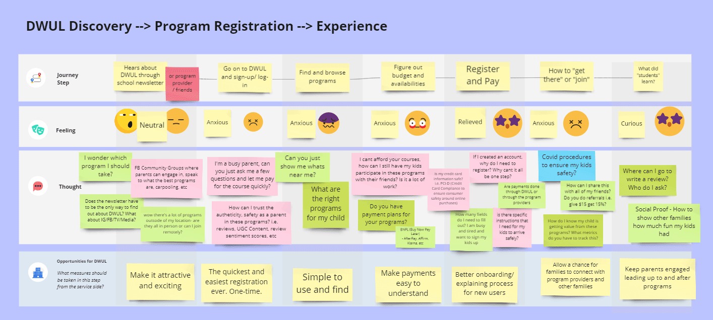

Do What U Luv Charity Organization
Working closely with Do What U Luv (DWUL), a charity organization in the Lower Mainland, to streamline the program registration process on their website to alleviate stress from families and allow the DWUL team to focus on expanding across Canada. This is an academic project for a senior interaction design class with the purpose of learning and applying various design methods
My Roles
Secondary Research
Client Communication
Art Direction
Visual Design
UI Design
UX Design
Prototyping
Animation
Team (Remote)
Andra Ciocan
Jerry Chuang
Sunita Mirzada
Time Frame
Spring 2021, for 12 weeks
(January - April)
Project Context
Creative Education Experiences
DWUL connects families and schools with creative after-school programming; the organization values educative experiences that children gain through these opportunities. Given that myself and other team members have worked with children and youth in the past, we were excited to be working with the organization and had a strong connection with DWUL's values.
Research
Netnography
We performed an adaptation of an ethnography study as we were unable to observe the programs offered in person due to privacy concerns and Covid-19 safety. Instead, we read many testimonials from parents, children, and school administrators to understand the experience and see where struggles occur when users are registering for programs on the DWUL website.
Semi-Structured Interviews
To further expand our research findings, we had several conversations with DWUL's founder and Executive Director, Tong Guan. We gathered knowledge on the frequent issues and were able to get a deeper understanding behind the scenes. For example, Tong Guan and other DWUL administrators were currently responding to customer requests and questions manually. This interested us to seek methods where customers could recieve the same level of care and attention, while allowing DWUL administrators to focus on the growth of their business.
Heuristic Analysis
After learning about the experience families have with DWUL's website, our team members individually performed a heuristic analysis to clarify and expand on the usability concerns expressed through the testimonials. We discovered several issues not previously brought to our attention during this analysis and gathered a richer understanding of where problems are occurring by experiencing them firsthand.
Insights
After performing the initial round of research and speaking with Tong Guan, we brainstormed and plotted DWUL's goals and the discovered usability issues onto an affinity diagram to transform rough ideas into concrete directions we could explore. The most pressing usability issues are as described below:
Understanding of DWUL
Many families did not understand that Do What U Luv is a separate organization from the program providers who offer programs on the platform. Issues arise when families seek to cancel a program or provide feedback because a DWUL administrator must manually perform these actions, taking away time and resources from improving the online platform and reach of the organization.
Contacting Support for Help
Actions such as requesting cancellations, refunds, and program transfers are not currently available on DWUL's website; families must contact DWUL through email or live support chat to get answers to their inquiries. Customers are then required to wait for someone at DWUL to respond to their concerns manually; automating this process would be helpful for families as well as DWUL.
Sense of Community
Do What U Luv is excellent at creating a welcoming environment and community space for its customers when physically participating in a program. Unfortunately, on DWUL's website, these values are not carried out. Families are encouraged to sign up for exciting programs; however, little follow-up after registration leaves them feeling anxious leading up to the program date. There is an opportunity for community engagement in the time between registering and attending a program.
Personas
We designed personas based on our research to better contextualize and empathize with the customers that interact with DWUL. These personas served as reference points when designing solutions to be implemented.
Legal Guardian
The parent or legal guardian of the child is involved in the registration process, involving handling the finances or receiving support aid if required. This particular persona was valuable in understanding the needs a family may have and how they receive support from DWUL.

Program Provider
The program providers post program listings on the DWUL website for families to explore and are subsequently responsible for facilitating these programs and activities in-person and online during Covid-19. We considered them when implementing design changes because they frequently interact with DWUL's website and often don't get to speak with families until the program begins.
Children
Because the child is physically participating in the programs, they were critical to consider when making design changes as the results would ultimately be reflected on their experience. Having this persona in view helped us as designers to reflect DWUL's mission of providing creative opportunities to as many children and youth as possible. However, we do acknowledge that children are not the target market of DWUL.
Journey Mapping
At this point, we decided to narrow our focus on the family's perspective as further conversations with DWUL's founder pointed at more concerns surrounding the registration process from the family's perspective as oppose to the program provider's.
Program Sign-up
The personas helped us analyze and map out the thought process of a family as they go through the booking process. In this case, it was a family who had just learned about DWUL and the programs offered through the organization. Here we identified frustrations and opportunities for growth with the registration process.
The journey maps are separated into two of the main concerns families have with the DWUL organization: recieving financial aid and a parent registering for a program with her child.
 Participatory Workshop
We invited stakeholders from DWUL and external designers to an online interactive workshop to gain a fresh outside perspective on making the registration process easier for families and program providers while automating repetitive actions for DWUL. We used three activities to help stimulate brainstorming in the workshop:
We had the participants work on three activities to help stimulate brainstorming in the workshop:
Mind Map
This activity served as an icebreaker to help our participants become familiar with Miro, an online collaborative program we used for the workshop. The map helped create ideas and discussions that would carry into the subsequent activities.
Fishbone Diagram
To help look through multiple lenses at the issue of requiring users to contact support and wait for a reply when encountering an issue, we structured a fishbone diagram where we asked participants to share their expertise on the concerns various stakeholders have surrounding this problem. As we had a diverse participant group, each member was able to specialize in a particular area of the diagram.
User Journey
For our final activity we asked participants to utilize insights from the previous exercises and instructed them on how to fill out a user journey map of the current registration process. This activity was beneficial as a confirmation tool of our own journey map, as well as additional insights into the worries families have with payment and leading up to the program date.
Results
Community Forum
After discussing further with Tong Guan and listening to stakeholder's opinions in our workshop and post-workshop surveys, we concluded that stimulating community engagement would be the best way to help connect families and program providers. We proposed that a community forum would be a great place to ask questions, share program knowledge, and reduce anxieties among family members leading up to program dates.
Reflection
Why a Community Forum
Reflecting on the final result of the project, while While a community forum could provide a space to connect families and program providers, a reflection I have had on this idea is that the community only works when everyone is actively participating. This can be difficult for a smaller scale organization to initially build and may cause more frustrations if certain questions are not answered. We proposed that DWUL administrators could help the initial stimulation of this website feature.
Design Methods
The most important outcome of this project for me was learning when to apply design methods, which ways they can be useful, and when to bring in an outside perspective. An interesting outcome of the participatory workshop post-survey was that participants expressed that they felt some of the activities were not beneficial. This contracted our outcomes of the workshop as we were provided incredible amounts of insight we had not thought of as a team. I account this to our summarization of the workshop where we thanked participants, but didn't inform them of how their insights would be used; something that I would do much different in the future.